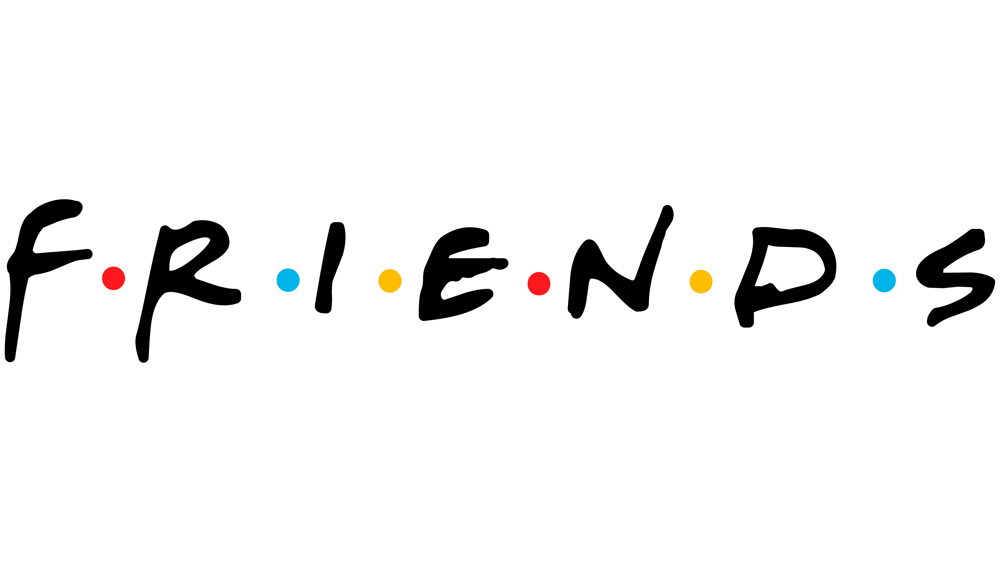
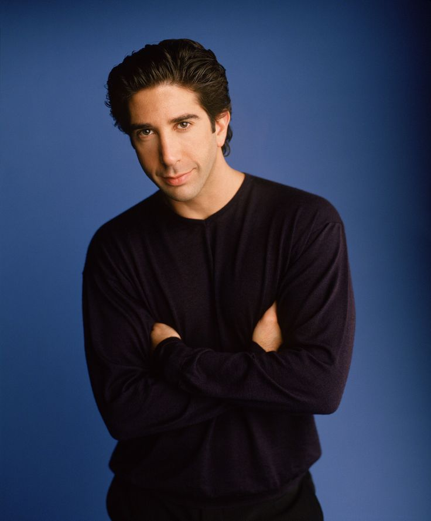
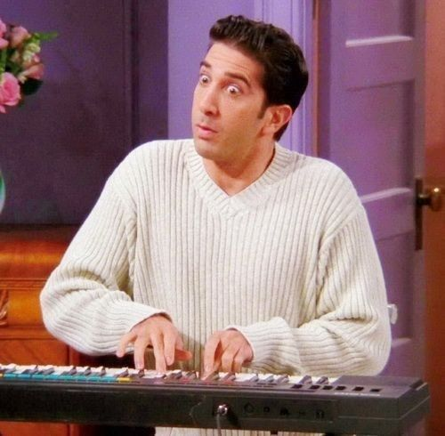
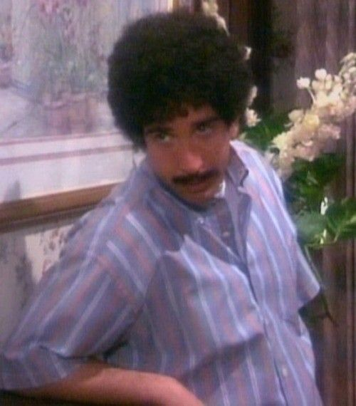
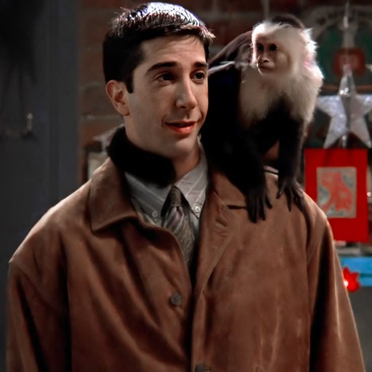
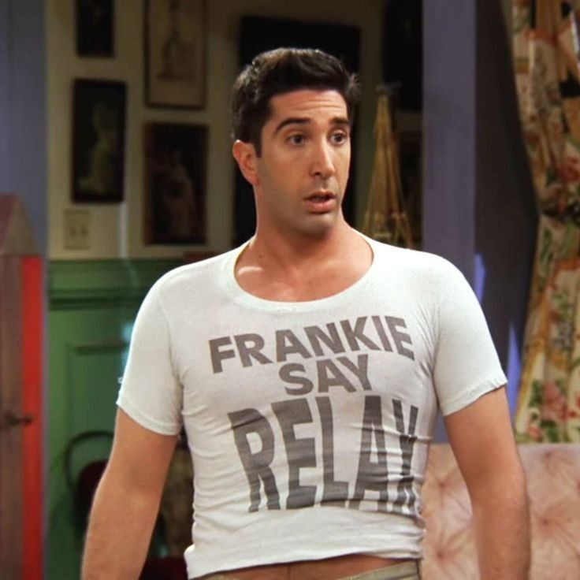

Conheça o Ross Geller

Ross Geller é conhecido por sua inteligência, sensibilidade e jeito emocional. Apaixonado por paleontologia, ele demonstra constantemente seu lado intelectual e curioso, mas também vive situações engraçadas por conta de sua timidez e insegurança em diversos momentos da série.
Ao longo das temporadas, Ross enfrenta desafios pessoais e amorosos que ajudam no seu amadurecimento. Mesmo sendo um personagem mais racional, ele frequentemente age por impulso quando envolve sentimentos, principalmente em relação a Rachel Green.


Seu relacionamento com Rachel é um dos principais fios da história, marcado por términos, reconciliações e momentos inesquecíveis. Apesar das dificuldades, Ross demonstra amar profundamente as pessoas ao seu redor e faz de tudo para proteger seus amigos e família.
Ross também conquista o público por suas cenas engraçadas e constrangedoras. Muitas vezes ele acaba entrando em situações caóticas por nervosismo ou excesso de preocupação, criando alguns dos momentos mais icônicos e divertidos da série.


Mesmo com seus defeitos e inseguranças, Ross é um personagem muito humano e verdadeiro. Sua mistura de inteligência, emoção e humor faz dele uma peça fundamental em Friends.